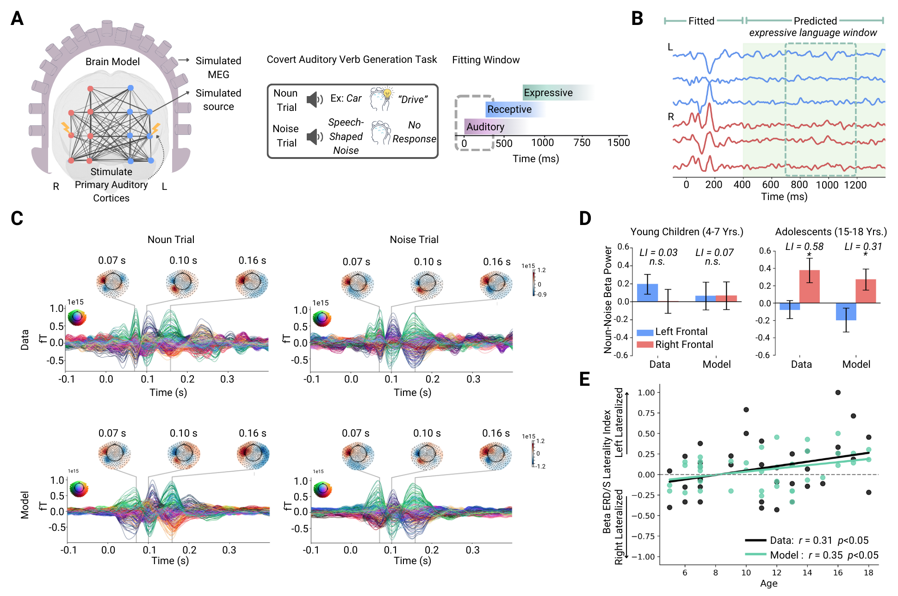
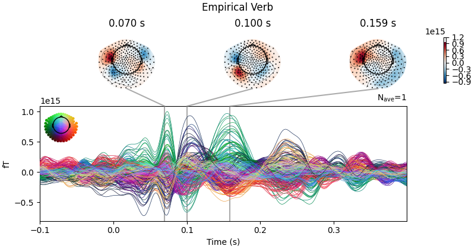
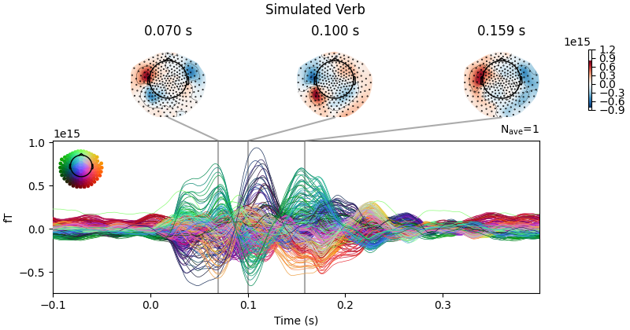
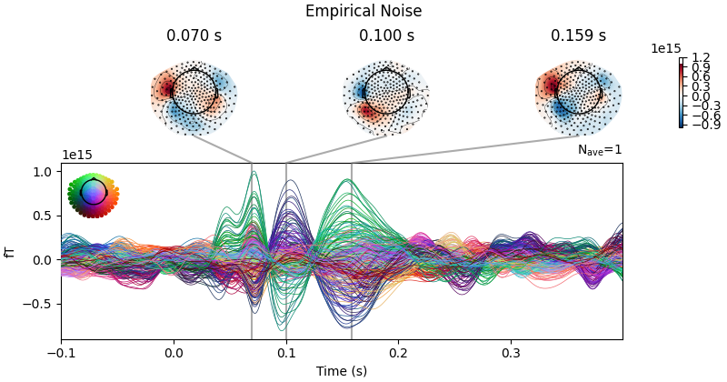
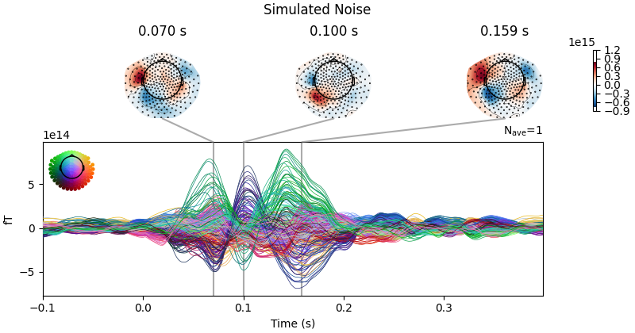
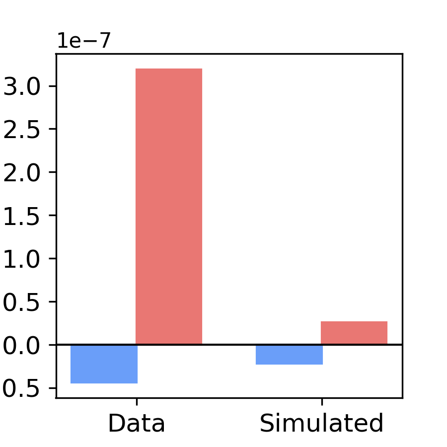

Note
Go to the end to download the full example code or to run this example in your browser via Binder.
Replicating Ismail et al. 2026#
This example replicates the whole-brain modelling in Ismail et al. (Nature Communications 2026). If you use this code, please cite the paper:
Ismail M.M., Momi D., Wang Z., Bastiaens S.P., Oveisi M.P., Greiner H.M., Mabbott D.J., Griffiths J.D., Kadis D.S. (2026). “Developmental disinhibition gates language lateralization in childhood.” Nature Communications, doi: 10.1038/s41467-026-71918-7.
Note
To reproduce the published results exactly, this example fits the
original model code from the paper, kept in whobpyt.depr.ismail2026.
That code differs from the current WhoBPyT API. To learn the current API,
start with Getting started: simulate and fit a whole-brain model and Modelling TMS-EEG evoked responses.
0. Overview#
This example replicates modelling in the Ismail et al. 2026 paper. The code includes data fetching, model fitting, and result visualization based on the methods presented in the paper.
Summary of paper In this study, we explore the mechanisms underlying language lateralization in childhood using personalized whole-brain network models. Our findings reveal that interhemispheric inhibitory circuits play a crucial role in shaping lateralized language function, with local inhibition decreasing over development while interhemispheric inhibition increases. Using systematic model manipulations and virtual transplant experiments, we show that the reduction in local inhibition allows pre-existing asymmetries in interhemispheric inhibition to drive laterality. This work provides a developmental framework for understanding how inhibitory circuits shape language networks.

This is Figure 1 from the paper, we will begin by replicating the results for one subject in this figure
1. Setup#
Imports:
import numpy as np
import pandas as pd
import torch
import torch.optim as optim
from torch.nn.parameter import Parameter
from sklearn.metrics.pairwise import cosine_similarity
import pickle
import os
import gdown
from scipy.io import loadmat
from whobpyt.depr.ismail2026.jansen_rit import ParamsModel, RNNJANSEN, Model_fitting, dataloader
from whobpyt.datasets.fetchers import fetch_egismail2026
import mne
import matplotlib.pyplot as plt
import seaborn as sns
import scipy.signal
from scipy import stats
2. Download data#
We use an example dataset for one subject on a public Google Drive folder
[1/13] Downloading distance.txt
[2/13] Downloading emp_noise_source.npy
[3/13] Downloading emp_verb_source.npy
[4/13] Downloading info.pkl
[5/13] Downloading info_nosubjinfo.pkl
[6/13] Downloading leadfield_3d.mat
[7/13] Downloading noise_evoked.npy
[8/13] Downloading sim_noise_sensor.npy
[9/13] Downloading sim_noise_source.npy
[10/13] Downloading sim_verb_sensor.npy
[11/13] Downloading sim_verb_source.npy
[12/13] Downloading verb_evoked.npy
[13/13] Downloading weights.csv
3. Load Functional Data#
We will use MEG data recorded during a covert verb generation task in verb generation trials and noise trials Evoked MEG data averaged across trials (-100 to 400 ms)
verb_meg_raw = np.load(os.path.join(output_dir, 'verb_evoked.npy')) # (time, channels)
noise_meg_raw = np.load(os.path.join(output_dir, 'noise_evoked.npy')) # (time, channels)
# Normalize both signals
verb_meg = verb_meg_raw / np.abs(verb_meg_raw).max() * 1
noise_meg = noise_meg_raw / np.abs(noise_meg_raw).max() * 1
4. Load Forward Model Input#
We will use the leadfield to simulate MEG activty from sources derived from the individual’s head model
leadfield = loadmat(os.path.join(output_dir, 'leadfield_3d.mat')) # shape (sources, sensors, 3)
lm_3d = leadfield['M'] # 3D leadfield matrix
# Convert 3D to 2D using SVD-based projection
lm = np.zeros_like(lm_3d[:, :, 0])
for sources in range(lm_3d.shape[0]):
u, d, v = np.linalg.svd(lm_3d[sources])
lm[sources] = u[:,:3].dot(np.diag(d)).dot(v[0])
# Scale the leadfield matrix
lm = lm.T / 1e-11 * 5 # Shape: (channels, sources)
5. Load Structure#
We will use the individual’s weights and distance matrices
sc_df = pd.read_csv(os.path.join(output_dir, 'weights.csv'), header=None).values
sc = np.log1p(sc_df)
sc = sc / np.linalg.norm(sc)
dist = np.loadtxt(os.path.join(output_dir, 'distance.txt'))
6. Put it all together and fit the model#
node_size = sc.shape[0]
output_size = verb_meg.shape[0]
batch_size = 250
step_size = 0.0001
input_size = 3
num_epoches = 2 #used 250 in paper using 2 for example
tr = 0.001
state_size = 6
base_batch_num = 20
time_dim = verb_meg.shape[1]
hidden_size = int(tr/step_size)
# Format input data
data_verb = dataloader(verb_meg.T, num_epoches, batch_size)
data_noise = dataloader(noise_meg.T, num_epoches, batch_size)
#To simulate the auditory inputs in this task we will stimulate the auditory cortices
#These nodes were identified using an ROI mask of left and right Heschl’s gyri based on the Talairach Daemon database
ki0 = np.zeros((node_size, 1))
ki0[[2, 183, 5]] = 1
#initiate leadfield matrices
lm_n = 0.01 * np.random.randn(output_size, node_size)
lm_v = 0.01 * np.random.randn(output_size, node_size)
par = ParamsModel('JR', A = [3.25, 0.1], a= [100, 1], B = [22, 0.5], b = [50, 1], g=[400, 1], g_f=[10, 1], g_b=[10, 1],\
c1 = [135, 1], c2 = [135*0.8, 1], c3 = [135*0.25, 1], c4 = [135*0.25, 1],\
std_in=[0, 1], vmax= [5, 0], v0=[6,0], r=[0.56, 0], y0=[-0.5 , 0.05],\
mu = [1., 0.1], k = [5, 0.2], kE = [0, 0], kI = [0, 0],
cy0 = [5, 0], ki=[ki0, 0], lm=[lm+lm_n, .1 * np.ones((output_size, node_size))+lm_v])
#Fit two models: 1) verb generation trials and noise trials
verb_model = RNNJANSEN(node_size, batch_size, step_size, output_size, tr, sc, lm, dist, True, False, par)
verb_model.setModelParameters()
#Stimulate the auditory cortices defined by roi in ki0
stim_input = np.zeros((node_size, hidden_size, time_dim))
stim_input[:, :, 100:140] = 5000
#Fit models
verb_F = Model_fitting(verb_model, data_verb, num_epoches, 0)
verb_F.train(u=stim_input)
verb_F.test(base_batch_num, u=stim_input)
print("Finished fitting model to verb trials")
#repeat for noise
noise_model = RNNJANSEN(node_size, batch_size, step_size, output_size, tr, sc, lm, dist, True, False, par)
noise_model.setModelParameters()
noise_F = Model_fitting(noise_model, data_noise, num_epoches, 0)
noise_F.train(u=stim_input)
noise_F.test(base_batch_num, u=stim_input)
print("Finished fitting model to noise trials")
Parameter containing:
tensor([[-0.1098, 0.0624, -0.3300, ..., -0.5234, 0.3307, 0.1307],
[-0.0517, 0.5992, -0.1790, ..., -1.1462, 0.8445, 0.1272],
[-0.0201, 0.9366, -0.1384, ..., -1.4282, 1.1865, 0.0951],
...,
[ 0.3139, 0.0979, 0.5336, ..., -0.2384, -0.2967, -0.3319],
[ 0.0649, -0.0562, 0.2184, ..., -0.1500, -0.1174, -0.0264],
[ 0.6493, 0.8077, 0.7365, ..., -0.5151, -0.9416, -0.8089]],
requires_grad=True)
epoch: 0 -225555.33
epoch: 0 0.3046015587834246 cos_sim: -0.056387935592963456
epoch: 1 -226226.97
epoch: 1 0.36637415763452547 cos_sim: 0.04921187246012653
0.4110229211415088 cos_sim: 0.10147384586990191
Finished fitting model to verb trials
Parameter containing:
tensor([[-0.1098, 0.0624, -0.3300, ..., -0.5234, 0.3307, 0.1307],
[-0.0517, 0.5992, -0.1790, ..., -1.1462, 0.8445, 0.1272],
[-0.0201, 0.9366, -0.1384, ..., -1.4282, 1.1865, 0.0951],
...,
[ 0.3139, 0.0979, 0.5336, ..., -0.2384, -0.2967, -0.3319],
[ 0.0649, -0.0562, 0.2184, ..., -0.1500, -0.1174, -0.0264],
[ 0.6493, 0.8077, 0.7365, ..., -0.5151, -0.9416, -0.8089]],
requires_grad=True)
epoch: 0 -225559.33
epoch: 0 0.2281816234216635 cos_sim: -0.11490302792671207
epoch: 1 -226230.73
epoch: 1 0.2739276935614341 cos_sim: -0.07553709377701305
0.27129731125949963 cos_sim: -0.019322574906271518
Finished fitting model to noise trials
7. Let’s Compare Simulated & Empirical MEG Activity#
we will use the simulations from the fully trained model in the downloaded directory
verb_meg_sim = np.load(os.path.join(output_dir, 'sim_verb_sensor.npy'))
noise_meg_sim = np.load(os.path.join(output_dir, 'sim_noise_sensor.npy'))
# Use existing MEG channel structure to use MNE format
with open(os.path.join(output_dir, 'info_nosubjinfo.pkl'), 'rb') as f:
info = pickle.load(f)
# Convert empirical data to MNE format
emp_verb_evoked = mne.EvokedArray(verb_meg[:, 0:], info, tmin=-0.1)
emp_noise_evoked = mne.EvokedArray(noise_meg[:, 0:], info, tmin=-0.1)
# Convert simulated data to MNE format
sim_verb_evoked = mne.EvokedArray(verb_meg_sim[:, 0:500], info, tmin=-0.1)
sim_noise_evoked = mne.EvokedArray(noise_meg_sim[:, 0:500], info, tmin=-0.1)
# Plot empirical verb trial
emp_verb_evoked.plot_joint(title=f"Empirical Verb", show=False, times=[0.07,0.1,0.1585])
# Plot simulated verb trial
sim_verb_evoked.plot_joint(title=f"Simulated Verb", show=False, times=[0.07,0.1,0.1585])
plt.show()
# Plot empirical noise trial
emp_noise_evoked.plot_joint(title=f"Empirical Noise", show=False, times=[0.07,0.1,0.1585])
# Plot simulated noise trial
sim_noise_evoked.plot_joint(title=f"Simulated Noise", show=False, times=[0.07,0.1,0.1585])
plt.show()




No projector specified for this dataset. Please consider the method self.add_proj.
No projector specified for this dataset. Please consider the method self.add_proj.
No projector specified for this dataset. Please consider the method self.add_proj.
No projector specified for this dataset. Please consider the method self.add_proj.
Results Description: Models successfully reproduced the timing and spatial topography of the early evoked MEG components (0-400 ms) observed for both conditions. Figure 1C shows the model-generated and empirical MEG time series during noun and noise trials for an exemplar subject.
8. Simulate models for longer (model was fitted with 500 ms of data, we will simulate 1500 ms!)#
We are interested in capturing changes in beta power between verb and noise trials observed from 700-1200 ms Create longer empty array with same shape and fill with the first 500 ms
sim_1500_verb = np.zeros((verb_meg.shape[0], 1500))
sim_1500_verb[:,:verb_meg.shape[1]] = verb_meg*1.0e13
node_size = sc.shape[0]
output_size = sim_1500_verb.shape[0]
batch_size = 250
step_size = 0.0001
input_size = 3
num_epoches = 2
tr = 0.001
state_size = 6
base_batch_num = 20
time_dim = sim_1500_verb.shape[1]
hidden_size = int(tr/step_size)
data_mean = dataloader((sim_1500_verb-sim_1500_verb.mean(0)).T, num_epoches, batch_size)
verb_F.ts = data_mean
u = np.zeros((node_size,hidden_size,time_dim))
u[:,:,100:140]= 5000
output_test = verb_F.test(base_batch_num, u=u)
#extract simulated sensor and source data for noise trials
sim_source_verb = verb_F.output_sim.P_test
sim_sensor_verb = verb_F.output_sim.eeg_test
#repeat for noise trials
sim_1500_noise = np.zeros((noise_meg.shape[0], 1500))
sim_1500_noise[:,:noise_meg.shape[1]] = noise_meg*1.0e13
node_size = sc.shape[0]
output_size = sim_1500_noise.shape[0]
batch_size = 250
step_size = 0.0001
input_size = 3
num_epoches = 2
tr = 0.001
state_size = 6
base_batch_num = 20
time_dim = sim_1500_noise.shape[1]
hidden_size = int(tr/step_size)
data_mean = dataloader((sim_1500_noise-sim_1500_noise.mean(0)).T, num_epoches, batch_size)
noise_F.ts = data_mean
u = np.zeros((node_size,hidden_size,time_dim))
u[:,:,100:140]= 5000
output_test = noise_F.test(base_batch_num, u=u)
#extract simulated sensor and source data for noise trials
sim_source_noise = noise_F.output_sim.P_test
sim_sensor_noise = noise_F.output_sim.eeg_test
0.41991855572218806 cos_sim: 0.08540972934983256
0.24435109338388372 cos_sim: -0.02960846832001758
9. Compare empirical and simulated change in beta power between verb and noise trials for one subject#
We are replicating figure 1D (Adolescents) for one subject We will load the empirical source data (model was fitted with sensor MEG data) and simulated source from pretrained model
emp_source_noise = np.load(os.path.join(output_dir, 'emp_noise_source.npy'))
emp_source_verb = np.load(os.path.join(output_dir, 'emp_verb_source.npy'))
sim_source_noise = np.load(os.path.join(output_dir, 'sim_noise_source.npy'))
sim_source_verb = np.load(os.path.join(output_dir, 'sim_verb_source.npy'))
#Compute beta power
# Sampling parameters
fs = 1000 # Sampling frequency (Hz)
nperseg = 512 # Segment length (500 ms)
noverlap = 256 # 50% overlap
# Index of frequency range for beta power corresponding to (13-30 Hz)
start_freq = 7
end_freq = 16
#We focus on the frontal regions
# Define frontal ROIs of shen atlas based on mask (subtract 1 for Python indexing)
frontal_rois = np.array([2, 7, 10, 17, 18, 24, 25, 26, 28, 30, 31, 33,
37, 38, 42, 50, 56, 59, 61, 62, 65, 66, 68, 71, 77,
78, 83, 91, 92, 94, 96, 98, 99, 100, 101, 102, 103,
108, 110, 113, 117, 125, 126, 129, 132, 133, 135, 137,
140, 142, 150, 158, 161, 172, 178, 180, 182, 183]) - 1
# Separate left and right hemisphere indices
right_frontal_idx = frontal_rois[frontal_rois < 93]
left_frontal_idx = frontal_rois[frontal_rois > 93]
emp_verb_psd = scipy.signal.welch(emp_source_verb[:, :, 1200:1700], fs=fs, noverlap=noverlap, nperseg=nperseg, detrend='linear')
emp_noise_psd = scipy.signal.welch(emp_source_noise[:, :, 1200:1700], fs=fs, noverlap=noverlap, nperseg=nperseg, detrend='linear')
sim_verb_psd = scipy.signal.welch(sim_source_verb[:, 800:1300], fs=fs, noverlap=noverlap, nperseg=nperseg, detrend='linear')
sim_noise_psd = scipy.signal.welch(sim_source_noise[:, 800:1300], fs=fs, noverlap=noverlap, nperseg=nperseg, detrend='linear')
#We average beta power across trials
emp_verb_beta= np.mean(emp_verb_psd[1][:, :, start_freq:end_freq], axis=(2))
emp_noise_beta= np.mean(emp_noise_psd[1][:, :, start_freq:end_freq], axis=(2))
sim_verb_beta=np.mean(sim_verb_psd[1][:, start_freq:end_freq], axis=1)
sim_noise_beta=np.mean(sim_noise_psd[1][:, start_freq:end_freq], axis=1)
emp_beta_diff = (np.mean(emp_verb_beta, axis=1)) - (np.mean(emp_noise_beta, axis=1))
sim_beta_diff = (np.array(sim_verb_beta)) - (np.array(sim_noise_beta))
#We seperate right and left regions to observe ERD in the left and ERS in the right
right_emp_avg = np.mean(emp_beta_diff[right_frontal_idx])
left_emp_avg = np.mean(emp_beta_diff[left_frontal_idx])
right_sim_avg = np.mean(sim_beta_diff[right_frontal_idx])
left_sim_avg = np.mean(sim_beta_diff[left_frontal_idx])
#Plot beta power difference in left and right frontal regions
labels = ['Data', 'Simulated']
x = np.arange(len(labels))
width = 0.35
fig, ax = plt.subplots(figsize=(3, 3), dpi=300)
ax.bar(x - width / 2, [left_emp_avg, left_sim_avg], width, label='Left Frontal',
capsize=5, color='#6a9ef9', edgecolor='#6a9ef9')
ax.bar(x + width / 2, [right_emp_avg, right_sim_avg], width, label='Right Frontal',
capsize=5, color='#e97773', edgecolor='#e97773')
ax.set_ylabel('Verb-Noise Beta Power', fontsize=14)
ax.set_xticks(x)
ax.set_xticklabels(labels)
plt.axhline(0, color='black', linewidth=1)
plt.xticks(fontsize=12)
plt.yticks(fontsize=12)
plt.show()

/opt/hostedtoolcache/Python/3.10.22/x64/lib/python3.10/site-packages/scipy/signal/_spectral_py.py:600: UserWarning: nperseg = 512 is greater than input length = 500, using nperseg = 500
freqs, _, Pxy = _spectral_helper(x, y, fs, window, nperseg, noverlap,
Results Description: Remarkably, despite being trained solely on early responses (0–400 ms), the models generalized beyond the fitted time window and domain, predicting beta-band oscillations (13-30 Hz) observed in a later time window during language production (700–1200 ms; Fig. 1B) in the frequency domain (Fig. 1D). This is a non-trivial result that highlights the model’s capacity to link temporal and spectral features of neural dynamics during the task. For this adolescent subject, models predicted a left-lateralized pattern, with left-right difference in the noun-noise beta power difference. Specifically, lower beta power, relative to noise trials, in the left frontal lobe (ERD) and greater beta power in the right (ERS) was observed. In the paper (Figure 1E) we compare the pattern of beta ERD/S between young children and adolescents and uur simulations captured developmental differences in the degree of lateralization of language production oscillatory patterns in response to speech versus noise (Fig. 1E).
Total running time of the script: (6 minutes 1.091 seconds)